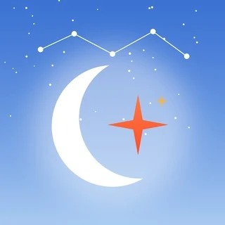

Astroline
Хорарная астрология
Ответ на ваш конкретный вопрос: отношения, выбор, решения. Задайте вопрос – карта момента подскажет.
1 Подпишитесь на канал
Подписаться на канал разборы, прогнозы и ответы на вопросы2 Задайте свой вопрос
Открыть бота Astroline ответ по карте момента прямо в TelegramПосле подписки вернитесь на эту страницу и нажмите вторую кнопку. Всё открывается в Telegram.